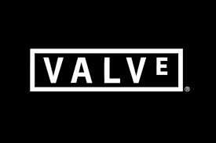

|

|
Valve Corporation була заснована у 1996 році Гейбом Ньюеллом та Майком Харрінгтоном.
Перший великий успіх компанії — випуск гри Half-Life у 1998 році.
Обидва засновники працювали в Microsoft і брали участь у створенні Windows. Надихнувшись можливостями 3D-графіки та популярністю ігор на кшталт Quake, вони вирішили створити власну ігрову студію. Ньюелл і Харрінгтон вклали особисті кошти та зареєстрували компанію Valve L.L.C. Перший офіс студії знаходився у Кіркленді, штат Вашингтон. Спочатку Valve займалася розробкою свого першого проекту - шутера від першої особи Half-Life, який вийшов 1998 року і став революцією в ігровій індустрії.
Історичні етапи Valve
- 1996: Заснування Valve.
- 1998: Випуск Half-Life.
- 2003: Запуск Steam — революційної платформи для цифрового розповсюдження ігор.
- 2012: Запуск Counter-Strike: Global Offensive та розвиток кіберспортивної сцени.
- 2015: Випуск движка Source 2, який змінив вигляд багатьох ігор Valve, зокрема Dota 2.
|